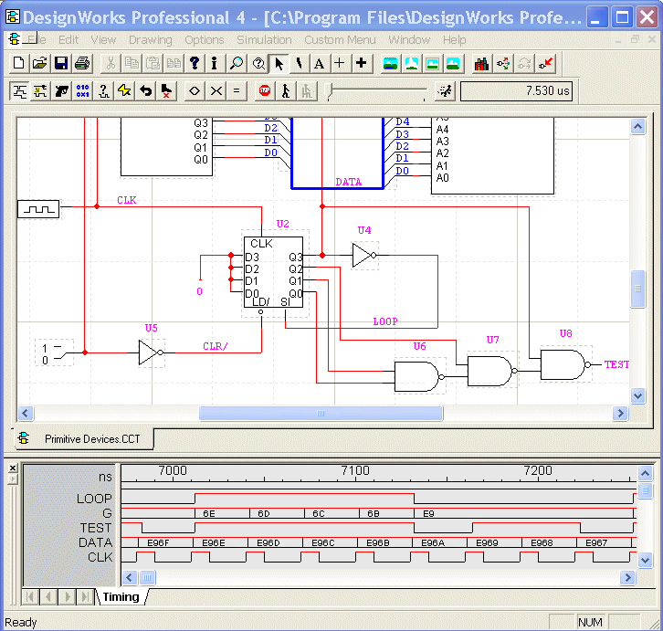
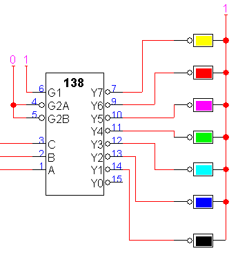

| [Home] [DWWP] [DWWP Features] [DWWP Simulator] [Change History] [DWWL] [OEM] [Viewer] |
DesignWorks Simulator Option for WindowsThe DesignWorks Simulator is an option that provides fully interactive digital simulation capability when used in conjunction with the DesignWorks Professional package. Starting with version 4.3, the simulator now includes high-level language modeling and simulation using VHDL.  DesignWorks optional digital simulator provides fully interactive, 13-state simulation. Schematic changes are reflected immediately in simulated results, both in flat and hierarchical designs. Signal values and device states can be probed right on the schematic. There is built-in support for RAMs, ROMs, PLDs and common logic types. A test vector module allows signal input and output values to be entered and viewed in text form, as an alternative to the waveforms displayed in the timing diagram. The DesignWorks simulator is completely interactive. Any changes made to circuit structure or simulation parameters are immediately reflected in the displayed simulation results, even inside hierarchical blocks. I/O Devices like switches, probes and displays are active right on the schematic, allowing you to interact directly with the circuit. Simulation models are provided for hundreds of standard components, including the 74XX and 4000 series. Models can be associated with each device symbol as it is used or loaded in batch for existing schematics. Any existing design can be attached to a device symbol and used as a model, allowing you to create simulations for arbitrarily complex devices. Clipboard operations like Cut, Copy and Paste allow picture and text data to be transferred to and from word processors and external analysis software ( Macintosh Only). Timing text data can also be written to and read from disk files. Trigger functions provide logic analyzer-style word recognition and glitch detection capability. Triggers can be cascaded with time constraints, allowing complex sequences of events to be recognized. Trigger actions can include stopping the simulation, enabling or disabling the timing display or generating a reference mark on the timing diagram. On-screen simulation controls give you direct access to commonly used simulator functions like clearing and single-stepping. These functions are also available in menu commands. The waveform display allows any number of waveforms to be displayed simultaneously. A grouping feature allows arbitrary collections of signals to be combined into a single trace with hexadecimal value display. Resolution can be changed and traces rearranged at any time, even while the simulation is running! The Test Vector tool provides powerful entry and execution of text test vectors in a text format. Complex timing and repeating sequences can be specified in the test program, along with comparisons of actual vs. expected results. Delays can be individually specified on any primitive device or device pin (including hierarchical blocks). This allows path delays to be customized to match a specific implementation of a circuit. Initial values for signals and pins can be specified as attributes. A method of batch loading a selected group of devices or pins with Min, Max or Typical delays is provided. 13-State simulation correctly handles high-impedance, conflicting, and unknown states. A digital resistor device can be used to simulate pullups, pulldowns or resistive drive levels. Bidirectional switches and transmission gates are also supported. Primitive devices with hard-wired simulating functions can be used to create efficient simulation models. Primitive devices are fully scalable, allowing, for example a 128-bit NAND gate or a 26-bit counter to be implemented as a single device. Logical inversion can also be specified on any pin, further increasing the flexibility of these models. RAM, PROM and PLA devices are also supported. What would you like to do?
|
|
|